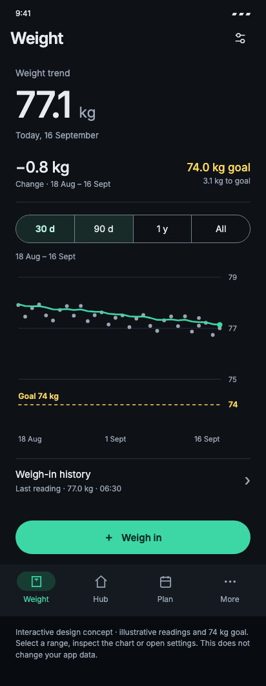
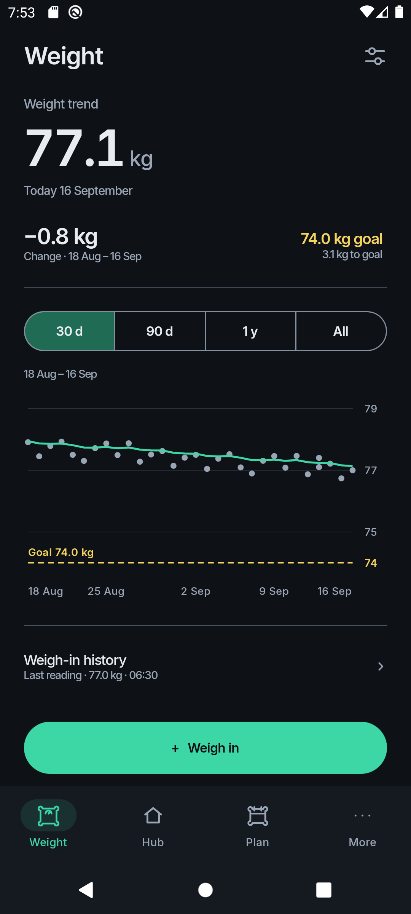

Both screens are displayed at 412px wide. Crops start at the “Weight trend” text box, removing differences in system bars and app bars. Neither image is stretched independently in height. Android retains the smaller, heavier type requested in WLO-0108; the reference retains its original typography sizes.


Viewport: mockup 412 CSS px; Android 1080 physical px at 420dpi = 411.43dp. Both content gutters are 24 logical units. Native Material touch targets and control metrics are retained. The small scaling correction from 411.43 to 412 is uniform.